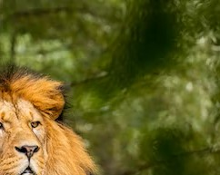
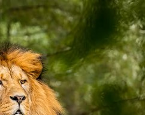

Cockatoo
The Cockatoo is a highly social bird species that is known for its distinctive crest of feathers on their head. In the wild, they are primarily found in the tropical regions of Australia, Indonesia, and the Philippines. Cockatoos are omnivores, meaning they eat both plants and animals as a part of their diet. In the Central Zoo, Cockatoos are typically fed a balanced diet of seeds, nuts, fruits, and vegetables. They also receive occasional treats such as hard-boiled eggs, crackers, and bird-friendly biscuits.
It is important to note that Cockatoos require a lot of mental and physical stimulation to keep them healthy and happy. This includes daily opportunities for exercise, such as climbing, playing with toys, and foraging for food. At the Central Zoo, keepers provide the Cockatoos with a variety of toys and puzzles to keep them entertained and engaged.
Overall, the Cockatoo is a highly intelligent and social bird that requires proper care and attention to maintain their health and happiness in captivity. By providing them with a nutritious diet, opportunities for physical and mental stimulation, and proper veterinary care, the Central Zoo is committed to ensuring that these birds thrive in their new home.
Cockatoos are a type of parrot found in the zoo. They primarily feed on seeds, nuts, fruits and insects. In captivity, they are often offered a varied diet including pellets, fresh fruits, and vegetables. A balanced diet is important for their overall health and well-being.


.avif)

.avif)
.avif)

 
